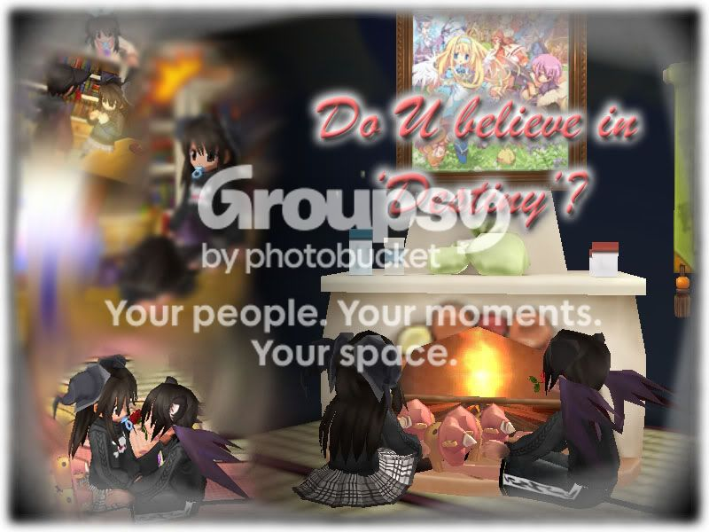

10 อันดับผู้เข้ารอบStory ปิ๊งรัก (เรื่องราวSv. โมจิ)
Moji 1
Moji 2
Moji 3
Moji 4
Moji 5
Moji 6
Moji 7
Moji 8
Moji 9
Moji 10
ming7749 เขียน:
“หากวันนั้นฉันเพียงไม่ได้พบเจอเธอ ในวันนี้ฉันจะยังคงได้รักเธออยู่อีกมั้ย.....”
เสียงเพลงลอยมาตามสายลมในค่ำคืนที่ผมนั่งเคียงข้างอยู่กับหญิงสาว นั่นสิเนอะ ผมคิดตามความหมายของเพลงไป.. วันแรกที่ได้พบเธอนั้นเอาเข้าจริงผมก็ลืมไปแล้วว่าเป็นอย่างไร แต่ที่จำได้จริงๆ ขึ้นมาในความรู้สึกนั้นคงเป็นอารมณ์แรกที่ปรากฏออกมาเป็นนิยามของความเป็นเธอ ความน่ารัก สดใส ร่าเริง ช่างพูด ช่างเอาใจ ใช่และที่สำคัญคือการพบกันหลายๆ ครั้งนั้นก็ทำให้ค้นพบได้ว่า เราเข้ากันได้ดีในเรื่องของความอบอุ่นใจ กับการที่จะมีใครสักคนอยู่เคียงข้าง ส่วนหนึ่งในใจจึงได้ประดับเธอเอาไว้ไปโดยไม่รู้ตัว เมื่อเวลาผ่านไปมันจึงกลายเป็นความลงตัวของสมการความหวานละมุน ครีมเทียม น้ำตาล กาแฟ กลิ่นของความหวานมัน ที่หอมกรุ่นจึงโชยฟุ้งออกมา..
ขณะที่ผมยกกาแฟขึ้นมาจิบ ลิ้มรสละไม เสียงเพลงที่ขาดหายไปก็ดังขึ้นมาอีก...
“เพียงขาดเธอไป ใจของฉันก็แทบมลาย แล้วฉันจะยังมีชีวิตอยู่ต่อไปได้อีกมั้ย หากขาดเธอ...”
มันเว่อร์เกินไปมั้ยในห้วงความรู้สึกนึงที่ผมได้ฟังเพลงนั้น และมันก็คงจะเกินไปจริงๆ กับการขาดใจหากขาดเธอ ใช่ ผมไม่เชื่อกับความรักแบบหลับหูหลับตาให้ตกตายกันไปข้างหนึ่ง เรื่องที่เริ่มต้นด้วยการไม่มีเหตุผล บางทีมันก็อาจจะจบลงอย่างไร้เหตุผลได้ด้วยเช่นกัน แล้วกับหญิงสาวข้างกายนี้ล่ะ... ครับ สุนทรียสนทนาในท่วงท่าของการพบปะระหว่างเรานั้น ถ้าให้ผมเปรียบน่าจะเหมือนกับการสายว่าวให้ลอยลม ดึงแรงเกินไปสายเชือกก็ขาด เบาไปว่าวก็ไม่ลอยลม แต่พอติดลมบนเรียบร้อยแล้วก็ไม่ต้องออกแรงอะไรมาก เพียงอาศัยสายลมบนพัดพาไป ล่องลอยไปตามครรลองจังหวะของฟากฟ้าเมฆา ปลายทางบางครั้งเราก็ไม่รู้เหมือนกันว่ามันจะไปถึงสายรุ้งบนขุนเขาหิมพานต์หรือติดอยู่บนคาคบของต้นไม้ ชีวิตบางทีก็ไม่รู้หนทางที่จะมุ่งหมายไป สิ่งที่จะรู้ก็คงเป็นเพียงช่วงจังหวะชีวิตในท่ามกลาง เราจะประคองมันไปให้ดีที่สุด
“จะต้องดีกว่านี้ หากฉันมีเวลาอีกเพียงนิด ฉันจะทำทุกๆ อย่างให้ดีขึ้นกว่าเดิม...”
เสียงเพลงดังคั่น ดึงผมออกมาจากห้วงคิดคำนึง ขณะที่วางแก้วกาแฟลง หญิงสาวข้างกายก็ยกแก้วชาร้อนๆ เข้ามาแทนที่ ในค่ำคืนที่เหน็บหนาว มีลมเย็นพัดกระหน่ำ บางทีเสื้อหนาๆ และเกราะป้องกันความหนาวใดๆ ก็อาจจะเทียบไม่ได้กับความอบอุ่นห่วงใย จากใครคนหนึ่ง คนที่ชิดใกล้ และให้ความอุ่นได้มากกว่าสิ่งใด
ครับ ชีวิตจะต้องดีขึ้นกว่าเดิมแน่ เพราะเป็นชีวิตที่มีใครสักคนอยู่เคียงข้างไปกับความอบอุ่นที่ไม่เคยห่างหายไปจากใจ เวลาที่ยังเหลืออยู่อีกเพียงนิดจะเป็นช่วงเวลาที่มีค่า เพราะเราจะทำวันนี้ให้เป็นเหมือนช่วงเวลาสุดท้ายที่เราจะได้อยู่ด้วยกันไปทุกวัน
ผมหันไปมองหญิงสาวที่อยู่ข้างกาย ตอนนี้เธอเอนคอพิงกับพนัก เข้าสู่ห้วงนิทรารมณ์ไปแล้ว แม้ช่วงเวลาสั้นๆ ที่ได้อยู่ด้วยกัน จะผ่านพ้นไปเร็วเหมือนดั่งความฝัน เมื่อนอนหลับตื่นขึ้นมาก็พบกับความจริงในอีก รูปแบบ แม้จะไม่ได้เอื้อนเอ่ยคำพูดอันใดออกมา แต่ผมก็ได้แต่คิดอยู่ในใจลึกๆ ว่า ขอบคุณเธอจริงๆ ที่มอบช่วงเวลาความสุขครั้งหนึ่งให้กับช่วงเวลาในชีวิตของผม ^^

Moji 2
UnderAmna เขียน:
ความรัก ไม่เคยมีคำว่าจำกัด! มันคือรักเเท้ ที่คนสองคนมีให้กัน เหมือนฉัน
....ฉันมีจิตใจ มีหัวสมอง มีร่างกายคบ32เหมือนคนอื่น เเค่ฉัน มีความต้องการ เเละความรักไม่เหมือนคนอื่น คนอื่นอาจมองว่า
ความรัก มันเป็นได้เเค่ ชาย♥หญิง หญิง♥ชาย เเต่ที่เเท้
ไม่ว่าจะเพศอะไร ก็สามารถรักกันได้ไม่ใช่หรอ? ถ้าขึ้นชื่อว่ารักเเล้ว อะไรก็คงไม่สำคัญ นอกจากคำว่า "รัก" ที่มีให้กัน
...เเม้ว่าฉัน จะถูกคนอื่น มองข้ามในการให้ความรัก หรือมองข้ามในการเเสดงความรักต่างๆ เเต่ในใจลึกๆ
"ฉันก็เสียใจเป็น" ชาย♥ชาย มันผิดตรงไหน ผิดตรงที่เรา รักเพศเดียวกันหรือ
ผิดตรงที่เรา รักผิดเพศหรือ ฉันอยากจะตอบว่า มันไม่ผิดเลย ถ้าคนเพศเดียวกัน มารักกันได้
มันไม่ใช่เพราะ เราอยากลองรัก เเต่มันคือ การเข้าใจของคนสองคน ที่มีความต้องการที่จะรักกัน
เเม้รักนั้นอาจไม่ถูกต้องในสายตาใครบางคน เเต่ถ้าได้เจอรักที่จริง ก็ควรคว้าไว้ ไม่ใช่หรือ
...สุดท้ายนี่ อยากจะบอกทุกคนที่มองข้ามหรือเกลียดความรักเเบบนี่ว่า คนเหล่านี้ก็มีหัวใจ
มีความต้องการ ทางรัก ไม่น้อยกว่าพวกคุณ ถ้าพวกคุณลองเปิดใจกว้าง ยอมรับเค้าสักนิด
มันก็คงจะดีไม่ใช่น้อย เพราะความรัก ไม่มีคำว่าผิด เเต่จะมีเเค่คำว่า รัก
" ฉันเลือกที่จะรัก ไม่ใช่เลือกที่จะถูก "

Moji 3
kyohararikka เขียน:
ความรัก...ก่อนหน้านี้ในหัวของฉันไม่เคยมีคำนี้แม้แต่น้อย
ในอดีตนั้น...เรื่องของฉันและเขา เป็นเรื่องที่แปลก
พวกเราเป็นคนที่ "ไม่เคยรู้จักกันมาก่อน"
พวกเรานั้น"เจอกันเพียงด้วยความบังเอิญ"
หรือว่า "เพราะโชคชะตา"?
คำว่า "โชคชะตา" สำหรับหลายๆคนคงคิดว่ามันเป็นเรื่องไร้สาระที่ไม่มีมูลเหตุใดๆ
แต่สำหรับตัวฉันแล้ว ถ้าถามละก็...ฉัน"เชื่อ" เพราะมันทำให้เราได้พบกัน
ในช่วงเวลานั้นเป็นช่วงเวลาของการประกวดการเต้น เพื่อนๆและตัวฉันทำเพื่อความสนุก
ช่วงที่พวกเราซ้อมเต้นจนเย็นเป็นประจำทุกวันเพื่อนๆทั้งวงกลับไปหมด เหลือเพียงฉันกับเพื่อนสนิทอีกคนอยู่ด้วยกัน
พวกเราเองก็กำลังจะกลับบ้าน แต่บางอย่างก็ทำให้พวกเราเพ่งมองไปที่ห้องตรงข้าม
มีคนอยู่.... พวกเรามองหน้ากัน ก่อนที่จะขยับตัวไปที่ริมประตูเพื่อดูว่าใครอยู่ในห้อง
ในนั้นมีกลุ่มรุ่นพี่กำลังซ้อมเต้นเพื่อแข่งขัน พวกเขาหันมามองเราด้วยความแปลกใจ
สักพักใหญ่ๆรุ่นพี่คนหนึ่งที่เดินออกมาในมือ ถือโทรศัพท์เพื่อออกมาคุยข้างนอก
นั่นแหละ..."เขา" หลังจากการพบกันครั้งแรก พวกเราก็เริ่มคุยกันมากขึ้นแม้ฉันจะไม่ค่อยกล้ามองหน้าใครก็ตาม ปรับตัวเองเพื่อให้ได้คุยกับเขา
นานวันเข้าพวกเราก็รู้จักกันมากขึ้น จากนั้นเราก็คบกัน...
แม้ตอนนี้จะอยู่ไกลกัน
ฉันก็ยังรักเขาและเชื่อว่าเขาก็รักฉันเช่นกัน
พวกเราไม่ใช่คนหน้าตาดี ไม่ใช่คนรวย ไม่ได้คาดหวังอะไรจากอีกฝ่าย...ก็แค่คนธรรมดาที่ ได้มีความรู้สึกดีๆต่อกัน
แล้วพวกคุณทั้งหลาย...เชื่อในโชคชะตาหรือเปล่า?
ไม่ต้องทำตัวโหยหาความรัก เพราะฉันเชื่อว่าทุกคนมีคนคนนั้นเป็นอีกเสี้ยวนึงที่ขาดหาย
ขึ้นอยู่กับกาลเวลา...เชื่อเถอะ โชคชะตา พรหมลิขิต อะไรก็ตามแต่ที่ทำให้เราได้พบกัน
มีอยู่จริง...
Moji 4
payoon1 เขียน:
"ความรัก" ยังไงก็คือความรัก ไม่ว่าจะต่างเพศ ต่างวัย ต่างศาสนา ยังไงก็คือรัก
ไม่ว่าคนที่เรารัก จะชั่วดีมีจน พิกลพิการ อัปลักษณ์จนดูไม่ได้หรือสวยจนไม่อยากละสายตาแค่ไหนพวกเขาก็เป็นคนที่เรารัก
ต่อให้ต่างกันมากมายดั่งดวงอาทิตย์กับดวงจันทร์หรือดั่งดวงดาวกับผืนดิน
ถ้ารักกันแล้ว ยังไงก็คือรัก
จะแปลกอะไร ถ้าดวงจอาทิตย์จะรักกับดวงจันทร์ หรือดวงดาวบนฟากฟ้าจะรักกับเศษดินบนผืนโลก
คนทุกคนสิทธิ์ที่จะรัก
เหมือนกับที่ฉันรักเธอและเธอรักฉัน
ฉันไม่ได้สนใจใครทั้งนั้น ฉันสนแต่ว่า ฉันรักคนๆนี้
จะแคร์อะไรมากมายกับสิ่งที่อยู่รอบข้าง ฉันแคร์หัวใจของฉัน
ฉันรักแม้จะรู้ว่าเราคงไม่ได้คู่กัน ฉันรักแม้จะรู้ว่าเราเป็นไปไม่ได้
ฉันรัก ฉันรู้แค่ว่าฉันรัก
เรารัก เรารู้แค่ว่าเรารัก
อย่างอื่นไม่เกี่ยว!
สิ่งต่างๆเป็นแค่องค์ประกอบภายนอก สิ่งสำคัญคือหัวใจที่ตรงกันของเราสองคน
ฉันไม่รู้ว่าเรายังเหลือเวลาอีกนานแค่ไหนที่จะได้อยู่เคียงกันเช่นนี้
แต่ฉันรู้ว่าเรายังเหลือเวลาตลอดทั้งชิวิตที่จะรักกัน
รักของเราเหมือนดาวเหนือ ดาวที่สองแสงนำทางให้นักเดินทางยามค่ำคืน
แต่ทุกคนคงรู้ ดาวเหนือไม่เคยลงมาจากฟ้าเพื่อเดินเป็นเพื่อนนักเดินทางเลยสักครั้ง
เราสองคนมีรักไว้ส่องแสงนำทางในชีวิต รักที่ไว้บอกทิศทางการเดินบนถนนที่ยาวไกล แต่คนที่เรารักไม่ได้มาเดินเคียงข้างเป็นเพื่อนเราก็เท่านั้น
เราต่างมีทางที่ต้องเดินเพียงลำพัง ทว่าหัวใจเราอบอุ่นเพราะเราเดินโดยมีรักส่องแสงอยู่ภายใน
รัก…ที่เป็นเรื่องของเราสองคนตลอดลมหายใจที่เรามี
รักที่เรารู้แค่ว่า "เรารักกัน"
-------------------------

Moji 5
GaLicKunG เขียน:
"ยามสนธยา ราตรีเยือนโลก เหมือนความทุกข์โศก ที่โลกรับมา ความรักนั้นหนา
ฟื้นจากนิทรา ให้เราสองรา เจอหน้าฟ้าใส อุปสรรคใดๆ ไม่ย่างกรายมา ปัญหาอื่นใด
ไม่มีปัญหา จับมือกันฝ่า ชั่วนาตาปี..."
สุขสวัสดีผู้อ่านทุกคนครับ ความรักนั้น ทุกคนเคยประสบ เคยเจอมาแล้ว ซึ่งเรื่องราวความรักของทุกคนนั้นแตกต่างกันไป ซึ่งผมจะเล่าเรื่องราวของผมกับคนที่ผมไว้ใจ พร้อมที่จะไปด้วยกันไหมครับ..
เหตุเกิดในดันส่วนตัวครับก็เก็บเวลธรรมดานี่แหละครับ ในขณะนั้นได้เจอผู้หญิงคนหนึ่ง ซึ่งตอนแรกก็แนะนำกันไปครับ(ผมชอบชวนคุยกับคนอื่น) แต่ผมคุยกับผู้หญิงคนนั้นถูกคอมากเลยล่ะ ครับ...ไปๆมาเริ่มที่จะสนิทกัน อ้อ ลืมไป เธอคนนั้นชื่อมีนครับ จากนิสัยที่ผมรู้ก็คือ เป็นคนที่ขี้วีน หากมีอะไรไม่เข้าหู จะอารมณ์ร้าย ทำตัวแบบว่า เป็นคุณหนูไฮโซครับ(ใส่ร้ายไปรึเปล่า) ครับ ถึงอย่างนั้นก็ยังคุยกันบ่อยมากเลย แบบว่าคุยกับเธอบ่อยทีสุดในเกมส์เลยล่ะ...ข้อเสียย่อมมีข้อดีครับ...ครับ เธอเป็นคนที่ไม่เคยทำให้ผมรำคาญเลย เวลาคุยอะไรด้วยนะครับ จะคุยด้วยเสมอ ไม่มีบ่น(เว้นแต่ไม่ว่างอ่ะนะ ธุระส่วนตัว) ช่วงนั้นผมได้พยายามเก็บเงิน ยืมเงินเขาบ้าง หะๆ สุดท้ายก็ได้เงินมา ได้หาซื้อของที่มีคุณค่าทางจิตใจ และในเกมส์ด้วย ผมซื้อบูสให้!! เป็นของขวัญที่ผมให้ตอนที่คบกันครั้งแรกเลยล่ะ ส่วนเธอให้ตราบรีดเดอ ผมดีใจมากเลยล่ะครับ ตอนแรกๆเลยเธอจะซื้อตราบรีดเดอให้ เราบอกว่า"ทำเองก็ได้นะ" แต่ผมดูดีๆแล้ว รู้สึกว่าจะให้ด้วยใจจริงๆของเธอเลยล่ะ ผมเลยรับมาครับ ทำให้ผมในตอนนั้นประทับใจมากเลยล่ะครับ^^ ครับ..ผมจำไม่ได้เลยว่าผมรักเธอไปตั้งแต่เมื่อไร ครับ... ตอนแรกผมกลัวที่จะเจ็บกับการที่ต้องบอกเธอ.. และกลัวเสียเพื่อนดีๆอย่างเธอไป แต่เมื่อผมบอกไป...เธอตอบตกลงด้วยล่ะ ครับลอยล่ะครับในตอนนั้น เป็นคำที่ดีทีสุดที่ผมได้ยินมา ประดุจดั่งเสียงนางฟ้าประทานมาให้ผมเลยแหละครับ^^
ครับ... การที่เราจะบอกรักใครสักคนนั้น ถึงจะเจ็บ..แต่ก็ยอมเพราะยังไงเราก็เคยที่จะรักใครสักคน อย่างน้อยเราก็กล้าที่จะบอกดีกว่าเธอจากไปแล้ว...เราได้แต่โทษตัวเองที่เราไม่ยอมบอก
หลังจากที่เราคบเธอนั้นนะครับ...เธอก็พยายามทำตัวน่ารักๆ เปลี่ยนนิสัยจากเดิม เปลี่ยนไปมากเลยแหละ
ไม่ค่อยจะวีนทั้งที่ผมไม่ขอเธอเลย แต่ผมก็พยายามไม่ทำตัวเย็นชาใส่เธอเหมือนก่อน ทำตัวร่าเริงให้เห็นเสมอเนอะ ถึงจะไม่มีเวลาดูแลกัน แต่ผมรักเธอเสมอมานะจ๊ะ มีนคนดีที่น่ารัก^^
ครับ...เป็นไงบ้างครับ สำหรับประสบการณ์ความรักของผม การที่เรา"กล้า"ที่จะบอกไป ถึงแม้เราจะปวดใจที่เราได้บอกไป หากเรามีความเชื่อมั่นจริงๆ พร้อมที่จะรับเหตุการณ์ในวันข้างหน้า หากไปในทางที่ดี มันจะเหมือนลอยบนสวรรค์เลยทีเดียว หากไม่สมหวัง ก็จงอย่ายอมแพ้นะครับ ร้องไห้ให้เต็มที่ แล้วเริ่มใหม่อย่างร่าเริงนะครับ...
ขอบคุณสำหรับทุกคะแนน ขอบคุณทุกกำลังใจ ขอบคุณทุกคน และขอบใจ"เธอ" ที่ทำให้เราได้เล่าเรื่องราว เจอผมก็ทักกันบ้างนะ
I Love You Forever
"สุขสวัสดี..."


Moji 6
TenrouHix9 เขียน:
นี่ คิดถึงเรื่องในวันนั้นอยู่หรือเปล่า วันที่เราอยู่ด้วยกัน
ความฝัน ไม่ว่าเมื่อไรก็คงจะอยู่เคียงข้างเสมอ
ตอนนี้ แม้ว่าเธอและฉันจะห่างไกลกันแค่ไหน
แม้ว่าในระยะทางนั้น เสียงจะส่งไปไม่ถึงก็ตาม
ไม่เป็นไร เพราะความรู้สึกก็ยังเชื่อมโยงถึงกัน
ได้รับแสงที่ส่องประกายระยิบระยับมาจากเธอ
ลูกแก้วยังคงกลิ้งอยู่บนมือของฉัน ของขวัญที่ล้ำค่านี้
สะท้อนภาพในตอนนั้นสว่างสดใส
แม้ว่าสำหรับเธอ มันอาจจะไม่มีความหมายใดๆ
แต่สำหรับฉัน มันเป็นสมบัติแสนสำคัญ ฉันจะไม่ลืม
ทั้งเวลาที่สนุก และเวลาที่เป็นทุกข์ ร่วมแบ่งปันให้กัน
ไม่ว่าเมื่อไร เธอก็อยู่เคียงข้างเสมอ
ไม่อาจเป็นคำพูด น้ำตามันไหลออกมา
แสงที่ส่องสว่างพลันเลือนหายไปจากฉัน
รวมทั้งภาพของเธอก็ด้วย เมื่อไรไม่รู้
ฉันไม่ได้ไล่ตามไปในวันนั้น
ฝันถึงความฝันแสนเศร้า ร่ำไห้ในยามราตรี
ใบหน้าแย้มยิ้มของเธอ บอกถึงจุดจบ
ทางที่คนสองคนเดินก้าวมา
คนหนึ่งปล่อยมือลาจากกัน

Moji 7
Cupcake เขียน:
ความสัมพันธ์ระหว่างฉันกับพี่เมื่อสมัยเหมือนก่อนมีกำแพงมากั้นขวางไว้ ไม่ว่ายังไงก็เหมือนจะไม่รู้ว่าพี่คิดอะไรอยู่? พี่จะทำอะไร? หรือพี่ทำแบบนี้ทำไม? เชื่อว่าอาจมีพี่น้องบางคู่เหมือนกับฉันเพราะฉันเห็นได้ว่าพี่กับน้องมักจะทะเลาะกันอยู่บ่อยๆ ฉันมักจะคิดเสมอว่าฉันรักพี่นะแต่ไม่กล้าบอกแล้วก็เอาแต่คิดคนเดียวว่าพี่ไม่รักฉันเลย พี่ไม่เคยทำอะไรที่ทำให้ฉันคิดว่าพี่เป็นห่วงฉัน..
ในวันหนึ่งฉันได้ไปเที่ยวห้างแห่งหนึ่ง ตอนนั้นฉันยังเด็กมากฉันเดินหลงทางกับคุณพ่อคุณแม่ ฉันพยายามหาทางกลับแต่ยิ่งเดินก็ยิ่งหลง ฉันจำทางไม่ได้จึงนั่งลงร้องไห้อยู่ข้างทาง ในตอนนั้นทำอะไรไม่ถูกจริงๆจะเดินต่อก็ไม่รู้จะไปทางไหนแล้ว ฉันที่ได้แต่กลัวไปต่างๆนานานั่งร้องให้แบบนั้นไปเรื่อยๆ จนรู้สึกว่ามีคนวิ่งมาอยู่ข้างหน้า พอฉันเงยหน้าขึ้นไป คนๆนั้นคือพี่นั่นเอง!! พี่กำลังยืนหอบอยู่ด้านหน้าฉันอีกมือก็เอื้อมมาเขกหัวฉันทีหนึ่ง แล้วบ่นว่าฉันไม่สนใจใครเดินมาคนเดียว พอพี่ว่าเสร็จพี่ก็เอื้อมมือมาจับมือฉัน มือของพี่สั่นหน่อยๆ พี่กำมือฉันแน่นมากและพาฉันกลับไปหาพ่อแม่ได้ในที่สุด ในเวลานั้นเองฉันถึงได้รู้ว่า.. พี่ที่ฉันเคยคิดว่าไม่รักฉันที่จริงพี่ก็เป็นห่วงเรามาก ที่พี่ไม่บอกคงเพราะอายเหมือนๆกับเรา ในตอนนั้นฉันรู้สึกดีใจมากที่รู้ว่าคนที่เรารักและเคารพเป็นห่วง การได้รับความห่วงใยเป็นอะไรที่ดีจริงๆค่ะ ^^
ในวันวาเลนไทน์นี้ฉันอยากจะบอกทุกคนว่า อย่ามองข้ามความรักในครอบครัวไป เวลาที่คุณเหงา เวลาที่คุณคิดว่าไม่มีใครรักคุณ ตอนนั้นขอแค่คุณอย่าลืมคนที่รักคุณที่สุด แล้วคุณจะรู้ว่าคุณไม่ได้อยู่คนเดียวในโลกค่ะ ^^ Happy Valentine นะคะ
เสียงที่เค้าดุด่าเรา.. แท้จริงคือความหวังดี
มือที่คอยทำโทษเราเวลาทำผิด.. แท้จริงคือความห่วงไย
ความแข็งกระด้างที่มอบมาให้เรา.. แท้จริงคือความหวังให้เรากล้าที่จะเผชิญโลก
ความอายที่เรามี.. แท้จริงคือความเสียใจที่จะติดตัวเราไปจนตายถ้าเราไม่ได้บอกคนที่รักเราว่า “รัก” เขาแค่ไหน

Moji 8
dOwy เขียน:
ขอแค่ทุกวันนี้ที่ฉันลืมตา .. ได้เห็นใบหน้าของเธอ
ฉันเป็นคนหนึ่งที่ได้ลองผิดลองถูกมามากมายในเรื่องของความรัก
ประสบการณ์ต่างๆ ได้ผ่านเข้ามาสอนให้ฉันคนนี้
รู้จักคำว่า ..รัก
รู้จักคำว่า ..ให้
รู้จักคำว่า ..อภัย
รู้จักคำว่า ..การรอคอย
รู้จักคำว่า ..เสียสละ
รู้จักคำว่า ..เสียใจ
และสุดท้ายคือการรู้จักคำว่า ..ลาจาก
ทุกสิ่งทุกอย่างล้วนผ่านเข้ามาทำให้ฉันรู้จักอะไรต่างๆ ในชีวิตมากขึ้น และทุกสิ่งทุกอย่างก็ได้สอนให้ฉันเข้มแข็งขึ้นเช่นกัน
....และวันนี้ฉันก็ได้พบคนที่สำคัญของฉัน
ตั้งแต่วันแรกที่เรา 2 คนได้รู้จักกัน
ผู้ชายคนนี้คอยอยู่ใกล้ๆ ดูแล เอาใจใส่ ห่วงใย ปลอบใจ ให้กำลังใจ
คอยอยู่เคียงข้างฉัน ในวันที่ฉันคนนี้ไม่เหลือใคร
รักและทำเพื่อฉันได้ทุกอย่าง เราสองคนได้ผ่านอะไรต่ออะไรกันมา ปัญหาต่างๆ มากมาย
และด้วยนิสัยที่ยังเป็นเด็กของฉันด้วยเช่นกัน ..
แต่ผู้ชายคนนี้ก็ยังทนรับได้ในตัวตนของฉัน
ผู้ชายคนนี้ได้เข้ามาทำให้ทุกวันของฉันนั้นมีแต่รอยยิ้ม
ทำให้ฉันหัวเราะ และมีความสุขในทุกๆ วัน
ผู้ชายคนนี้ได้สอนให้ผู้หญิงคนนี้ได้รู้จักคำว่า “รัก” ที่ไม่เหมือนกับคำว่า “รัก” ที่ฉันเคยได้รู้จักและผ่านมา
ฉันขอให้ต่อไปนี้ ฉันมีผู้ชายคนนี้อยู่เคียงข้าง
อยากลืมตาขึ้นมาแล้วเจอผู้ชายคนนี้อยู่ตลอดเวลาไม่ห่างไปไหน
อ้อมกอดที่แสนอบอุ่นที่ทำให้ฉันหลับฝันดีอยู่ทุกคืน
รอยยิ้มของผู้ชายคนนี้จะส่งมาให้ฉันเมื่อยามที่ฉันลืมตาตื่น
ฉันขอให้ทุกสิ่งทุกอย่างอยู่กับฉันและสุดที่รักของฉันตลอดไป ....
" จะขอเอาคำว่ารัก ทุกคำที่ฉันได้เคยเอ่ย "
" จะขอมันคืนจากใครที่เคยผ่านเข้ามา "
" จะขอรวมคำว่ารักเหล่านี้ ทวีความหมายและคุณค่า "
" จะขอเอามามอบไว้ให้เธอผู้เดียว "

Moji 9
Desire เขียน:
Pop❤Som
ความรัก คืออะไร?
อะไร ทำให้เกิดความรัก?
สมัยก่อนมีหลายครั้งที่ผมถามตัวเองว่า ทำไมคนนู้นคนนี้ถึงมีแฟน มีคนมาแอบชอบ
ทำไมเราเกิดมาบนโลกนี้สิบกว่าปีแล้ว ยังไม่เคยเหนคนมอง คนปลื้ม หรืออะไรแม้แต่คนเดียว
หลายคนบอกว่า ความรักจะบังเกิดขึ้นมาโดยที่เราไม่ทันตั้งตัว
อีกหลายคนบอกว่า ถ้าเราไม่คิดถึงความรัก มันจะเข้ามาหาเราเอง
เมื่อก่อนผมไม่ใช่คนที่โหยหาความรักมาจากไหน
ถึงแม้ลึกๆอาจต้องการมีความรักกับเขาบ้าง แต่ก็สามารถใช้ชีวิตไร้สาระไปวันๆได้
จนมาได้พบเธอ ผู้หญิงคนนึง ที่ดูเผินๆแล้วไม่ต่างอะไรกับใคร แล้วทำไม ผมถึงรักเธอล่ะ?
คำถามนี้ ดูเหมือนจะไม่มีคำตอบ เราสองคนเคยถามกันว่าเป็นเพราะอะไร ทำไมเราถึงรักกัน
แต่ก็ได้แต่สันนิษฐานไป ไม่รู้หรอกว่า อะไรทำให้เกิดความรัก
แต่เราก็รักกันในที่สุด และผมก็เข้าใจว่า ชีวิตมีคนๆนี้คนเดียวก็เพียงพอแล้ว
เวลาของเราสองคนผ่านไปเร็วนะ เกินปีครึ่งแล้ว เดี๋ยวก็สองปี สามปี
ผ่านเหตุการณ์อะไรมาตั้งมากมาย มีสุขมีทุกข์ สวีทกันทะเลาะกัน สลับกันไป
แรกเจอกัน ใครจะคิดว่าเราจะคบกันจริงๆ และคบกันได้นานขนาดนี้
จนถึงตอนนี้ มีแต่เพื่อนถามว่า ทำไมคบกันได้นานจัง บ้าง
ไม่เบื่อเลยหรือไง ไม่คิดจะหาสิ่งที่ดีกว่าเหรอ บ้าง ซึ่งผมก็ตอบได้เลยว่าไม่เบื่อและไม่คิด
เพราะเธอคนนี้ อาจไม่ใช่คนดีที่สุดก็จริง แต่เธอคนนี้ คือหัวใจของผม เป็นคนเดียวที่ผมรัก
จากผู้ชายคนนึงที่ไม่เคยจับมือผู้หญิงคนไหนที่รุ่นราวคราวเดียวกัน
เธอทำให้ผมเข้าใจว่านี่แหละคือความรัก
ถึงผมจะยังไม่รู้ความจริงเกี่ยวกับความรักทั้งหมด
แต่การที่ผมได้มีเธอ และมีเธอเพียงคนเดียวในหัวใจ
ทำให้ผมได้รู้ว่า อะไรที่เร้นลับบางทีเราก็ไม่ต้องการรู้มัน
ขอแค่มีเราสองคน ใครจะเป็นอย่างไรก็ไม่สำคัญแล้ว
เหมือนดังบทสุดท้ายของเรื่องราวความรัก ที่พระเอกได้เจอกับนางเอก
แล้วทั้งสองก็รักกัน อยู่ด้วยกันอย่างมีความสุขตลอดไป
ผมสัญญานะ ว่าผมจะรักเธอและดูแลเธอให้ดีที่สุด
ไม่ว่าท้องฟ้าวันพรุ่งนี้จะเป็นสีอะไร ผมจะยืนเคียงข้างเธอคนนี้ ไม่ไปไหนแล้ว
สุดท้ายนี้ ผมขอบอกดังๆว่า "รักน้องส้มป่อยนะ -3-"
http://www.ijigg.com/songs/V2B4774GPAD

Moji 10
=โคโตะ= เขียน:MY LOVE STORY
ตั้งแต่เมื่อไหร่ไม่รู้ ที่เราได้เจอกันครั้งแรก
เวลานั้นผมได้แต่เฝ้ามองเธออย่างห่างๆ ไม่รู้ทำไมผมถึงได้รู้สึกสนใจผู้หญิงคนนี้นัีกนะ
เวลานั้นผมไม่มีความกล้า แม้แต่จะคุยกับเธอ ผมยังทำไม่ได้
จนมีอยู่มาวันหนึ่ง เป็นโอกาสที่ผมได้รู้จักเธอ ผมตัดสินใจคุยกับเธอ และได้รู้ว่าเธอมีความชอบเดียวกัน
พวกเราคุยกันอย่างสนุกสนาน ความสัมพันธ์จากคนเคยพบมาเป็นเพื่อน และเพื่อน มาเป็นเพื่อนสนิทกันในที่สุด
แต่กำแพงแห่งเพื่อนสนิทนั้นช่างกว้างหนา ผมมีความสุขที่ได้อยู่ักับเธอคนนี้ ได้พูดคุยกับเธอคนนี้
ผมเริ่มลังเลในใจ ว่าผมรู้สึกอย่างไรกับเธอ รู้สึกว่าเป็นเพื่อน หรือมากกว่านั้น ผมไม่ได้ตัดสินใจ
จนมีอยูมาวันหนึ่ง ผมเห็นเธอนั่งร้องไห้อยู่คนเดียวด้วยความเศร้าโศก ผมไม่รู้จะทำอย่างไร แต่ก็ไปคุยกับเธอ
วันนั้นเป็นวันที่ผมได้รู้จักเธอจริงๆ ได้รู้ปัญหาและเรื่องชีวิตของเธอ
ผมปลอบเธอ คุยกับเธอได้อย่างไม่ขะเขิน ไม่รู้เหมือนกันว่าผมเป็นอะไรไป แต่ผมเข้าใจแล้ว ว่าผมรู้สึกยังไงกับเธอ
หลังจากวันนั้น เหมือนฟ้าจะบันดาล เธอพูดกับผม เธอบอกว่าผมเป็นเหมือนเทวดาที่ช่วยดึงเธอมาจากความทุกข์ร้อนเศร้าใจ
แต่จริงๆไม่ใช่หรอก เธอต่างหากที่เป็นนางฟ้าที่บรรดลความสุขมาให้ผม
ผมตัดสินใจพูดความในใจออกไป เธอฟังคำพูดของผมทุกคำ
ผมคิดว่าจะไม่เสียใจ ถ้าเธอไม่ตอบรับผม ถึงแม้จะเป็นการโกหกตัวเองก็ตาม
แต่แล้วเธอก็ให้โอกาสผม เธอค่อยๆยื่นมือขวาเล็กๆของเธอออกมาเป็นการตอบรับความในใจของผม ผมเอื้อมมือไปรับโอกาสที่เธอให้กับผมอย่างไม่ลังเล...
ถึงแม้ตอนนี้เราจะยังไม่ได้ถึงขั้นแต่งงานกัน จะยังไม่ได้คิดถึงเรื่องในอนาคต
แต่พวกเราก็คิดว่าตอนนี้เรามีความสุขอยู่กับปัจจุบันก็พอแล้ว
คำว่ารัก เราอาจจะไม่ได้บอกกันบ่อยๆ แต่เราก็รู้อยู่ในใจว่าต่างคนต่างคิดอย่างไร
บางทีการที่เราไม่ค่อยบอกรักกันนั้น อาจจะเป็นการเพิ่มความหวานอีกอย่างหนึ่งก็ได้
คำพูดบางคำ หากเราไม่พูดพร่ำเพื่อ... บางทีคำพูดนั้น อาจจะดูมีความหมายขึ้นอีกสักนิดละมัง?...
อยากบอกว่ารักนะคับ ////
ทิ้งท้าย - เรื่องรักเรื่องเรียนเราไปด้วยกัน แบ่งเวลาให้ถูก ชอบกันรักกันแล้ว ช่วยกันเรียน ช่วยกันทำงาน ไม่เสียอนาคตแน่นอนครับ ＾＾
แล้วก็อย่าลืมเพื่อนๆด้วยเน่อ เคยคิดมั๊ยว่าถ้าเราไม่มีเพื่อน เราจะมีวันนี้ได้เหรอ?
ใครจะบอกว่าเพื่อนก็เพื่อน แฟนก็แฟน ผมว่าแฟนก็เป็นเพื่อนคนหนึ่งเหมือนกันนะ